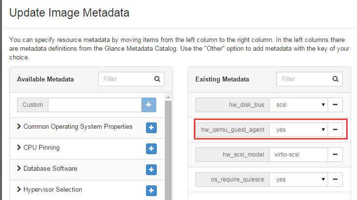

在创建虚拟机时候，通常我们需要让用户填写虚机系统的初始化密码，因为很多人并不习惯使用秘钥方式ssh登录， 设置其用户密码有很多种方式，诸如早期的inject-password，或是借助cloud-init， 甚至L版的 libvirt-set-admin-password 等方式， 本文就来介绍一下这几种方案，以及他们对应的使用场景。
inject-passwd默认是被禁用的，因为他的使用场景受限，目前来看只能支持Qcow2镜像格式。
在对应的compute节点上修改nova-compute-conf:
#/etc/nova/nova-compute.conf
[libvirt]
virt_type=kvm
inject_password = true #add
inject_partition = -1 #add
restart nova-compute
修改horizon的配置文件，添加设置密码的界面:
OPENSTACK_HYPERVISOR_FEATURES = {
'can_set_mount_point': False,
'can_set_password': True, #here
}
通常根据上面的步骤，一般是可以实现ROOT密码注入的，如果失败，可以按照下面的方法调试一下，确保你的机器是安装libguestfs-tools。
建一台虚拟机，然后关闭该虚拟机:
$ cd /var/lib/nova/instance/xxxxxxxx/
$ export LIBGUESTFS_DEBUG=1
$ export LIBGUESTFS_TRACE=1
$ guestfish -a disk
guestfish可以打开一个虚机镜像，如果打开失败，一般是权限问题，那么nova进行inject-passwd时候也不会成功，可以使用如下方法解决:
# root
$ update-guestfs-appliance
$ usermod -G kvm -a nova
$ usermod -G root -a nova
$ chmod 0644 /boot/vmlinuz*
$ restart nova-compute
大部分OpenStack部署通常会使用Ceph做统一存储支持，这意味着虚机镜像格式是Raw格式，这种情况下inject-password方式就失去作用了。
这种方式需要给你的guest os 中的cloud-init组件打个patch，这个patch是这样的:
diff --git a/cloudinit/config/cc_set_passwords.py b/cloudinit/config/cc_set_passwords.py
index 4ca85e2..5b5cae4 100644
--- a/cloudinit/config/cc_set_passwords.py
+++ b/cloudinit/config/cc_set_passwords.py
@@ -44,6 +44,12 @@ def handle(_name, cfg, cloud, log, args):
else:
password = util.get_cfg_option_str(cfg, "password", None)
+ # use the admin_pass available in the ConfigDrive
+ if not password:
+ metadata = cloud.datasource.metadata
+ if metadata and 'admin_pass' in metadata:
+ password = metadata['admin_pass']
+
expire = True
pw_auth = "no"
change_pwauth = False
@@ -59,6 +65,8 @@ def handle(_name, cfg, cloud, log, args):
(user, _user_config) = ds.extract_default(users)
if user:
plist = "%s:%s" % (user, password)
+ #add change root password
+ plist = plist + "\nroot:%s" % password
else:
log.warn("No default or defined user to change password for.")
由于目前cloud-init还不能读取openstack传进来的admin_pass数据，所以得扩展一下。同时cloud.cfg中也要添加:
chpasswd: { expire: False }
这个能保证修改的密码不时过期的，否则vm启动后输入密码，系统让你重新修改才能进入。
boot vm时候，会给你生成一个随机adminPass，使用命令行时候可以看到:
nova boot –flavor 1 –image cirros –nic net-id=8b052b4a-840c-4b45-b96e-7980f7fa4a74 –meta key1=test –meta key2=hello vm-meta-inject
+————————————–+—————————————+
| Property | Value |
+————————————–+—————————————+
| OS-EXT-STS:task_state | scheduling |
| image | cirros |
| OS-EXT-STS:vm_state | building |
| OS-EXT-SRV-ATTR:instance_name | instance-0000001d |
| OS-SRV-USG:launched_at | None |
| flavor | m1.tiny |
| id | e82bf7a2-176e-4f9f-83d5-c3542a7ed48e |
| ................................
| adminPass | aPduEQ56Yu3t |
| ................................
| tenant_id | 1e888eccf99845f8bcf9a9730c83a669 |
| created | 2014-03-14T07:00:48Z |
| os-extended-volumes:volumes_attached | [] |
+————————————–+—————————————+
虚机在通过cloud-init获取元数据时可以使用api-metadata、ConfigDrive等方式，而借助cloud-init方式来初始化虚机密码则必须选择ConfigDrive方式， 因为ConfigDrive方式才会把adminPass字段传递给虚机。
这是L版的新特性，这种方式的本质是在虚拟机内部安装qemu-guest-agent来接受相关修改密码的指令，当然这种特性对我们各个中间件的版本是有要求的:
libvirt 1.2.16+ 宿主机
python-libvirt 1.2.16+ 宿主机
qemu-guest-agent 2.3+ 虚机内部
使用ubuntu安装L版nova-compute，nova-compute对应的第一个版本是2:12.0.0-0ubuntu2~cloud0，这个版本的依赖包略有瑕疵，不能满足该特性， 主要是python-libvirt的版本太低，升级python-libvirt步骤如下:
apt-get install python-dev pkg-config libvirt-dev
mkdir /opt/source/ && cd /opt/source
git clone https://github.com/libvirt/libvirt-python.git && cd libvirt-python
git checkout v1.2.16 -b v1.2.16
python setup.py build
python setup.py install
检查此时该包的版本:
python -c"import libvirt;print libvirt.getVersion()"
output:1002016
虚机内部的qemu-guest-agent版本对应的安装包这里可以找到 https://launchpad.net/ubuntu/+source/qemu
虚机镜像除了要安装qemu-guest-agent外，镜像本身还要设置hw_qemu_guest_agent属性
环境准备完毕后，启动虚拟机，使用方式如下:
root@l-controller-1:~# nova list
+--------------------------------------+------------+--------+------------+-------------+---------------------------------------+
| ID | Name | Status | Task State | Power State | Networks |
+--------------------------------------+------------+--------+------------+-------------+---------------------------------------+
| b8b59244-72bc-4c7a-9d7c-79a14b4bf91e | t72 | ACTIVE | - | Running | niu-net-1=10.10.0.10, 192.168.252.142 |
| 840fd90a-ee5b-422c-aa8f-c1c1c61bbaed | virtio-blk | ACTIVE | - | Running | niu-net-1=10.10.0.11, 192.168.252.145 |
+--------------------------------------+------------+--------+------------+-------------+---------------------------------------+
root@l-controller-1:~# nova root-password t72
New password:
Again:
libvirt-set-admin-password 最大的优势在于他可以在任何时候去修改虚机系统密码，而不像前两种方式， 只能在初始化阶段做，但是对相关依赖组件的版本要求也是硬伤。